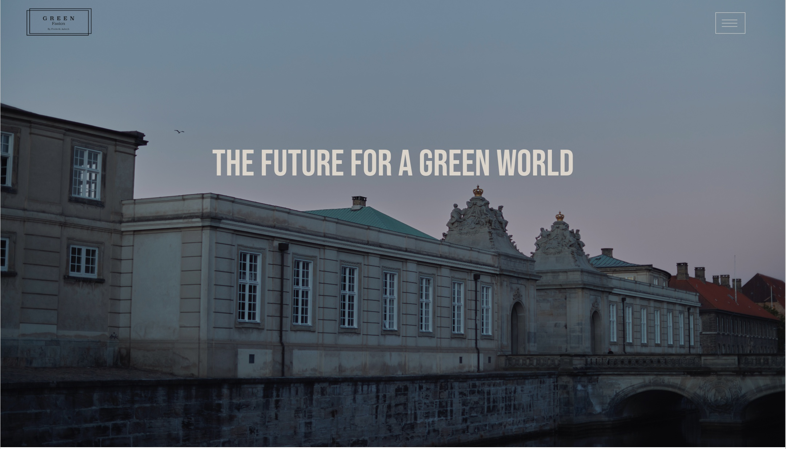

Grundlæggende UX
Bruger undersøgelse med forkus på at forbeder brugerns oplevelse på en side
I tema - 3 Blev der lagt flere værktøjer til hvordan man laver en god hjemmeside.
ved nemlig at tilføje brugerens holdning til hvordan siden virker godt og dårligt.
Det gør vi ved at udforme en rekte forkelige resacse metoder. - blandt andet desk research, surveys og interviews.
Med det data vi får fra det kan vi i Adobe XD skabe en hige fadelety prototype, hvor vi kan gør brug af UI kits blandt andet fra Adobe stock, samt sætter de billeder ind vi gerne vil bruge på vores side. dem kan vi også selv gå ud og produkter.
Den prototype vil vi kunne tilføje copy- og micro-copywriting, til så vi for det tættest mulige racutat på en færdig ikke kodet side. Med det kan vi brug den til at lave en pitch med så vi er et skridt tætter på at være klar til at kode det færdige produkt.
Jeg har været syg i slutningen af dette tema og det er også derfor at Pichen ikke optræder på min side.
Men man bruger en Pich til at fremvise et stykke arbejde, som vises gennem den proces man har gemmenført.
Kompetance liste
- Adobe Photoshop
- Adobe XD
- VS Code
- Desk Research
- Interview som undersøgne metode
03.02.06 Prototype 2
Her for du et indblik i hvordan læringen er blevet omsat til handling og et produkt.